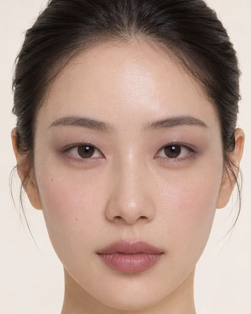

传播趋势
社交传播推动色彩探索
韩国个人色彩诊断经由短视频和 K-Beauty 传播，进入部分年轻消费者的造型探索和赴韩行程。公开报道也记录了诊断与彩妆、穿搭选择的联系。
01 / MARKET OPPORTUNITY
个人色彩诊断的关注度持续扩展，但专业服务的体验门槛与日常配色需求之间仍存在机会。
传播趋势
韩国个人色彩诊断经由短视频和 K-Beauty 传播，进入部分年轻消费者的造型探索和赴韩行程。公开报道也记录了诊断与彩妆、穿搭选择的联系。
单店公开报价
首尔 ColorLover 基础服务，约 40 分钟。含英语咨询的公开价格为 ₩64,900。咨询需预约，包含线下比色与人工判断。
应用机会
当用户把色彩倾向用于彩妆、发色或服装选择时，会进一步搜索具体颜色、对比上脸表现和购买选项。
让低门槛的个人色彩探索，支持一次具体的日常美妆选择。
02 / USER INSIGHTS
从测试结果到实际美妆选择，用户仍要判断颜色、套妆搭配和建议是否可信。
在尚未确认价值前，用户可能不愿先投入线下咨询时间和费用。
「冷夏」「暖春」给出方向，具体的口红、眉色、眼影和粉底还要自己选。
不同彩妆、发色和穿搭各自筛选，缺少可以在不同场合复用的配色依据。
光线、滤镜和设备都会影响自拍。用户需要理解结果的依据，也要能修正。
研究备注 · 以上是待验证的用户需求假设，尚未进行访谈验证。
如何用 AI 把个人色彩探索变成低门槛、可解释、可调整的美妆配色决策？
03 / PRODUCT DIRECTION
统一裁切、视角和原图基准，实现从「看配色」到「选套妆」的转换。季型诊断和跨品类配色作为后续方向，首轮优先验证妆效选择与编辑。



同一示例模特的预生成上脸图。实际上传时，每张结果由图像编辑服务独立生成。
04 / KEY INTERACTIONS
05 / QUALITY & VALIDATION
示例路径使用预生成图片。本人实时试妆需要配置图像 API，并用真实返回图片完成端到端验收。